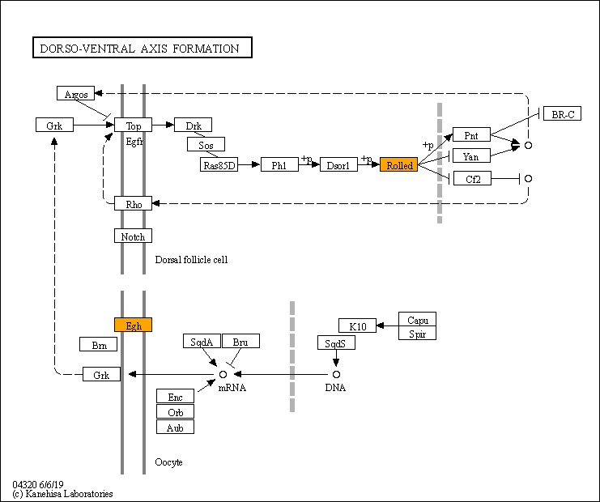

Dorso-ventral axis formation - Reference pathway
[
Pathway menu
|
Pathway entry
|
Image file
|
Help
]

Option
Scale:
100%
Search
ID search
Color
 Dorso-ventral axis formation - Reference pathway
Dorso-ventral axis formation - Reference pathway
Dorso-ventral axis formation - Reference pathway
Dorso-ventral axis formation - Reference pathway